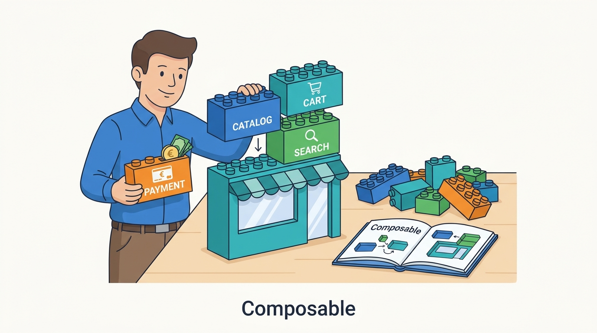

Part XI — PRACTICE: How Others Built It
Case: commercetools, Shopware and the Composable Movement
AI-assisted: researched and written with Claude Code, images generated with the Gemini API. How this works

Part XI — PRACTICE: How Others Built It
AI-assisted: researched and written with Claude Code, images generated with the Gemini API. How this works
